Hemodynamic Response Functions
Bradley R. Buchsbaum
2026-02-10
Source:vignettes/a_01_hemodynamic_response.Rmd
a_01_hemodynamic_response.RmdIntroduction to Hemodynamic Response Functions (HRFs)
A hemodynamic response function (HRF) models the temporal evolution of the fMRI BOLD (Blood-Oxygen-Level-Dependent) signal in response to a brief neural event. Typically, the BOLD signal peaks 4-6 seconds after the event onset and then returns to baseline, often with a slight undershoot.
fmrihrf provides tools to define, manipulate, and
visualize various HRFs commonly used in fMRI analysis.
Pre-defined HRF Objects
fmrihrf includes several pre-defined HRF objects, which
are essentially functions with specific attributes defining their type,
number of basis functions (nbasis), and effective duration
(span).
Let’s look at two common examples: the SPM canonical HRF
(HRF_SPMG1) and a Gaussian HRF
(HRF_GAUSSIAN).
# SPM canonical HRF (based on difference of two gamma functions)
print(HRF_SPMG1)
#> -- HRF: SPMG1 ---------------------------------------------
#> Basis functions: 1
#> Span: 24 s
#> Parameters: P1 = 5, P2 = 15, A1 = 0.0833
# Gaussian HRF
print(HRF_GAUSSIAN)
#> -- HRF: gaussian ------------------------------------------
#> Basis functions: 1
#> Span: 24 s
#> Parameters: mean = 6, sd = 2These objects are functions themselves, so you can evaluate them at
specific time points. The plot_hrfs() function provides a
convenient way to compare multiple HRFs:
time_points <- seq(0, 25, by = 0.1)
# Compare HRFs using plot_hrfs() - normalize = TRUE scales to peak at 1.0
plot_hrfs(HRF_SPMG1, HRF_GAUSSIAN,
labels = c("SPM Canonical", "Gaussian"),
normalize = TRUE,
title = "Comparison of SPM Canonical and Gaussian HRFs",
subtitle = "HRFs normalized to peak at 1.0 for shape comparison")
Note that the span attribute (e.g., 24 seconds)
indicates the approximate time window over which the HRF is
non-zero.
Modifying HRF Parameters with gen_hrf
The gen_hrf function is a flexible way to create new HRF
functions, often by modifying the parameters of existing ones.
For example, the hrf_gaussian function takes
mean and sd arguments. We can use
gen_hrf to create Gaussian HRFs with different peak times
(mean) and widths (sd).
# Create Gaussian HRFs with different parameters using gen_hrf
# Note: hrf_gaussian is the underlying function, not the HRF object HRF_GAUSSIAN
hrf_gauss_7_3 <- gen_hrf(hrf_gaussian, mean = 7, sd = 3, name = "Gaussian (Mean=7, SD=3)")
hrf_gauss_5_2 <- gen_hrf(hrf_gaussian, mean = 5, sd = 2, name = "Gaussian (Mean=5, SD=2)")
hrf_gauss_4_1 <- gen_hrf(hrf_gaussian, mean = 4, sd = 1, name = "Gaussian (Mean=4, SD=1)")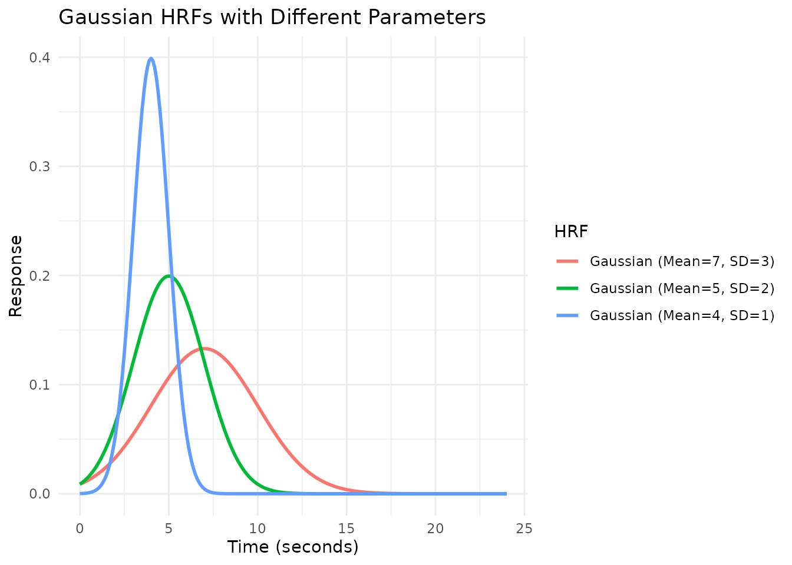
gen_hrf can also directly incorporate lags and durations
(see later sections).
Modeling Event Duration with block_hrf
fMRI events often have a duration (e.g., a stimulus presented for
several seconds). The block_hrf function (or
gen_hrf with a width argument) modifies an HRF
to model the response to a sustained event of a specific
width (duration). Internally, it convolves the original HRF
with a boxcar function of the specified width.
The precision argument controls the sampling resolution
used for this convolution.
# Create blocked HRFs using the SPM canonical HRF with different durations
hrf_spm_w1 <- block_hrf(HRF_SPMG1, width = 1)
hrf_spm_w2 <- block_hrf(HRF_SPMG1, width = 2)
hrf_spm_w4 <- block_hrf(HRF_SPMG1, width = 4)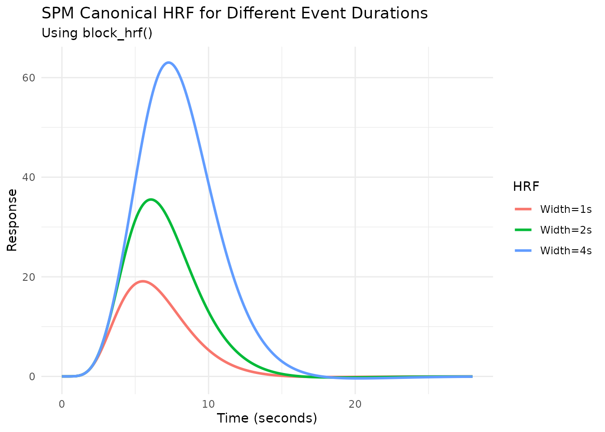
Normalization
By default, longer durations lead to higher peak responses (assuming
summation, see next section). Setting normalize=TRUE in
block_hrf (or gen_hrf) rescales the response
so the peak amplitude is approximately 1, regardless of duration.
# Create normalized blocked HRFs
hrf_spm_w1_norm <- block_hrf(HRF_SPMG1, width = 1, normalize = TRUE)
hrf_spm_w2_norm <- block_hrf(HRF_SPMG1, width = 2, normalize = TRUE)
hrf_spm_w4_norm <- block_hrf(HRF_SPMG1, width = 4, normalize = TRUE)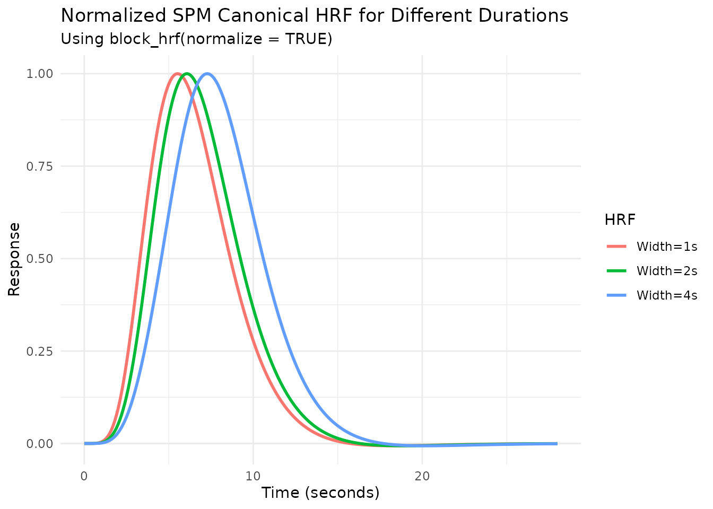
Modeling Saturation with summate
The summate argument in block_hrf controls
whether the response accumulates over the duration
(summate=TRUE, default) or saturates
(summate=FALSE). Saturation implies that the response
reaches a plateau and doesn’t increase further with longer
stimulation.
# Create non-summating blocked HRFs
hrf_spm_w2_nosum <- block_hrf(HRF_SPMG1, width = 2, summate = FALSE)
hrf_spm_w4_nosum <- block_hrf(HRF_SPMG1, width = 4, summate = FALSE)
hrf_spm_w8_nosum <- block_hrf(HRF_SPMG1, width = 8, summate = FALSE)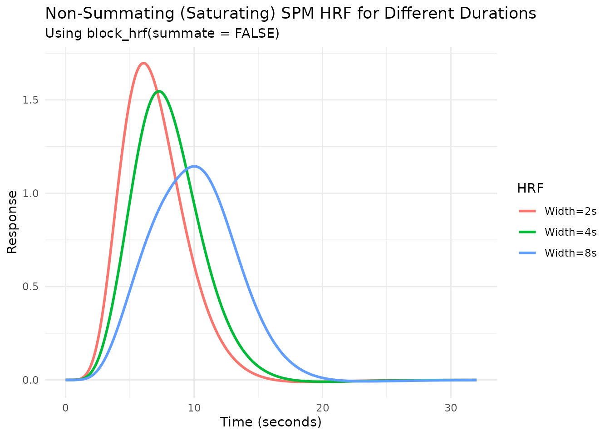
We can combine summate=FALSE and
normalize=TRUE:
# Create normalized, non-summating blocked HRFs
hrf_spm_w2_nosum_norm <- block_hrf(HRF_SPMG1, width = 2, summate = FALSE, normalize = TRUE)
hrf_spm_w4_nosum_norm <- block_hrf(HRF_SPMG1, width = 4, summate = FALSE, normalize = TRUE)
hrf_spm_w8_nosum_norm <- block_hrf(HRF_SPMG1, width = 8, summate = FALSE, normalize = TRUE)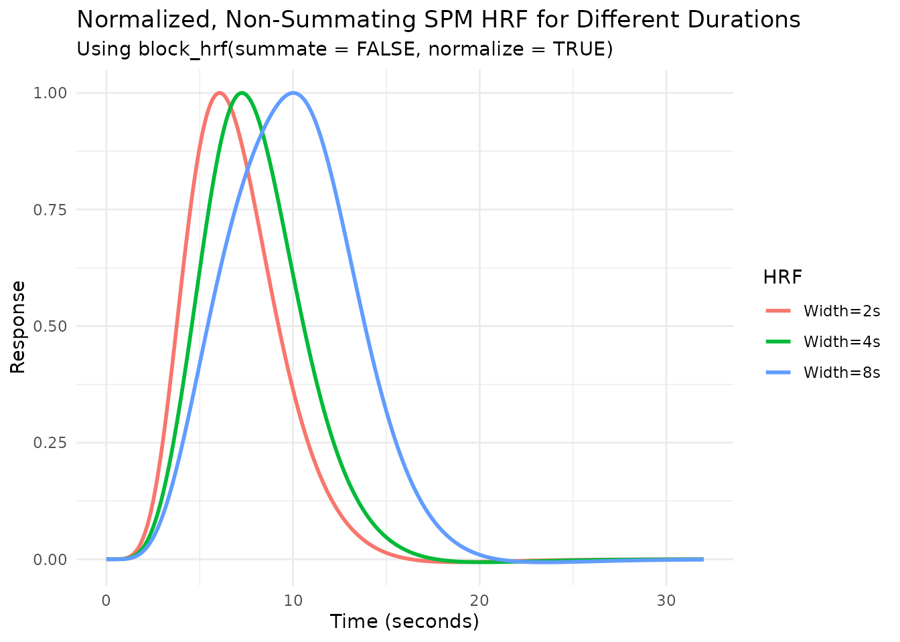
Modeling Temporal Shifts with lag_hrf
Sometimes, the hemodynamic response might be delayed or advanced
relative to the event onset. The lag_hrf function (or
gen_hrf_lagged) shifts an existing HRF in time by a
specified lag (in seconds). A positive lag delays the
response, while a negative lag advances it.
# Create lagged versions of the Gaussian HRF
hrf_gauss_lag_neg2 <- lag_hrf(HRF_GAUSSIAN, lag = -2)
hrf_gauss_lag_0 <- HRF_GAUSSIAN # Original (lag=0)
hrf_gauss_lag_pos3 <- lag_hrf(HRF_GAUSSIAN, lag = 3)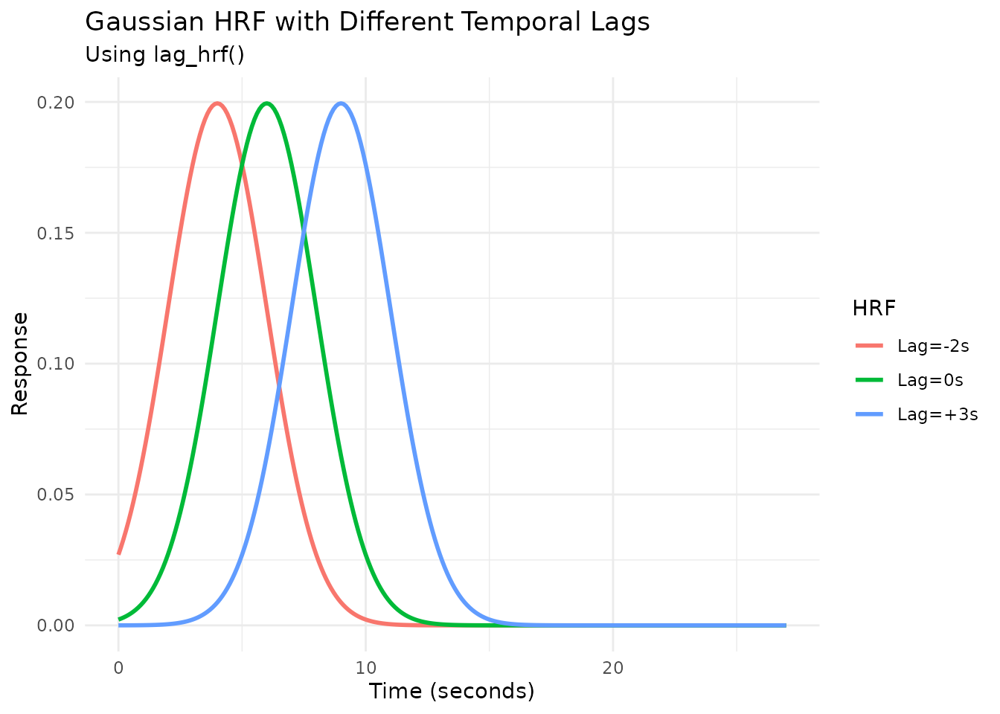
Combining Lag and Duration
We can combine lag_hrf and block_hrf using
the pipe operator (%>%) from dplyr (or
magrittr).
# Create HRFs that are both lagged and blocked
hrf_lb_1 <- HRF_GAUSSIAN %>% lag_hrf(1) %>% block_hrf(width = 1, normalize = TRUE)
hrf_lb_3 <- HRF_GAUSSIAN %>% lag_hrf(3) %>% block_hrf(width = 3, normalize = TRUE)
hrf_lb_5 <- HRF_GAUSSIAN %>% lag_hrf(5) %>% block_hrf(width = 5, normalize = TRUE)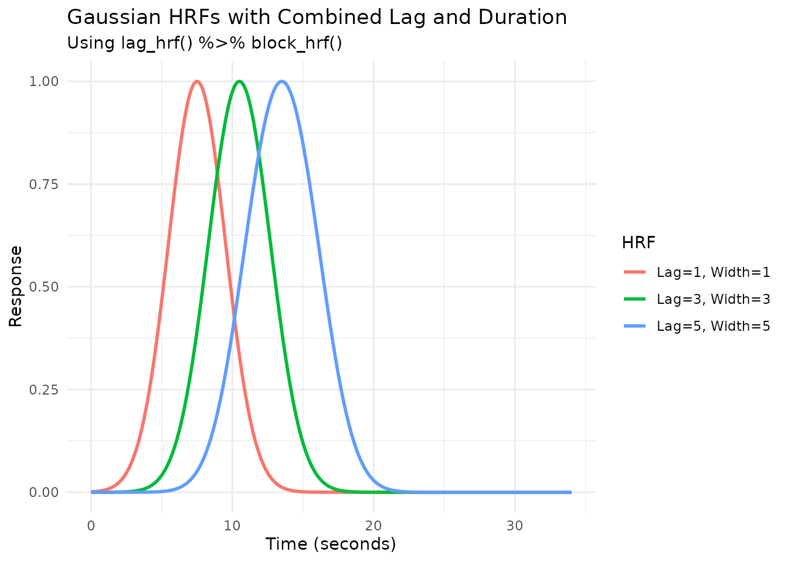
Alternatively, gen_hrf can apply lag and width
directly:
# Using gen_hrf directly
hrf_lb_gen_3 <- gen_hrf(hrf_gaussian, lag = 3, width = 3, normalize = TRUE)
resp_lb_gen_3 <- hrf_lb_gen_3(time_points)
# Compare (should be very similar to hrf_lb_3 from piped version)
# plot(time_points, resp_lb_3, type = 'l', col = 2, lwd = 2, main = "Piped vs gen_hrf")
# lines(time_points, resp_lb_gen_3, col = 1, lty = 2, lwd = 2)
# legend("topright", legend = c("Piped", "gen_hrf"), col = c(2, 1), lty = c(1, 2), lwd = 2)Multivariate HRFs: Basis Sets
Instead of assuming a fixed HRF shape, we can model the response using a linear combination of multiple basis functions. This allows for more flexibility in capturing variations in HRF shape across brain regions or individuals. The resulting HRF function returns a matrix where each column corresponds to a basis function.
SPM Basis Sets
fmrihrf provides pre-defined HRF objects for the SPM
canonical HRF plus its temporal derivative (HRF_SPMG2), and
additionally its dispersion derivative (HRF_SPMG3).
# SPM + Temporal Derivative (2 basis functions)
print(HRF_SPMG2)
#> -- HRF: SPMG2 ---------------------------------------------
#> Basis functions: 2
#> Span: 24 s
# SPM + Temporal + Dispersion Derivatives (3 basis functions)
print(HRF_SPMG3)
#> -- HRF: SPMG3 ---------------------------------------------
#> Basis functions: 3
#> Span: 24 s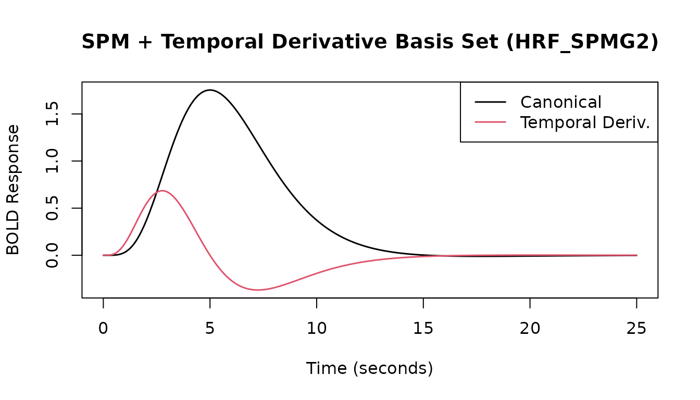
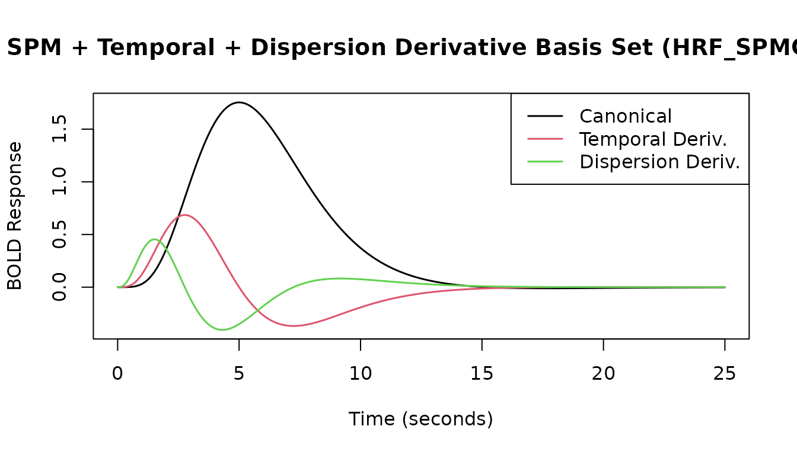
B-Spline Basis Set
The hrf_bspline function generates a B-spline basis set.
We typically use it within gen_hrf to create an HRF object.
Key parameters are N (number of basis functions) and
degree.
# B-spline basis with N=5 basis functions, degree=3 (cubic)
hrf_bs_5_3 <- gen_hrf(hrf_bspline, N = 5, degree = 3, name = "B-spline (N=5, deg=3)")
print(hrf_bs_5_3)
#> -- HRF: B-spline (N=5, deg=3) -----------------------------
#> Basis functions: 5
#> Span: 24 s
# B-spline basis with N=10 basis functions, degree=1 (linear -> tent functions)
hrf_bs_10_1 <- gen_hrf(hrf_bspline, N = 10, degree = 1, name = "Tent Set (N=10)")
print(hrf_bs_10_1)
#> -- HRF: Tent Set (N=10) -----------------------------------
#> Basis functions: 10
#> Span: 24 s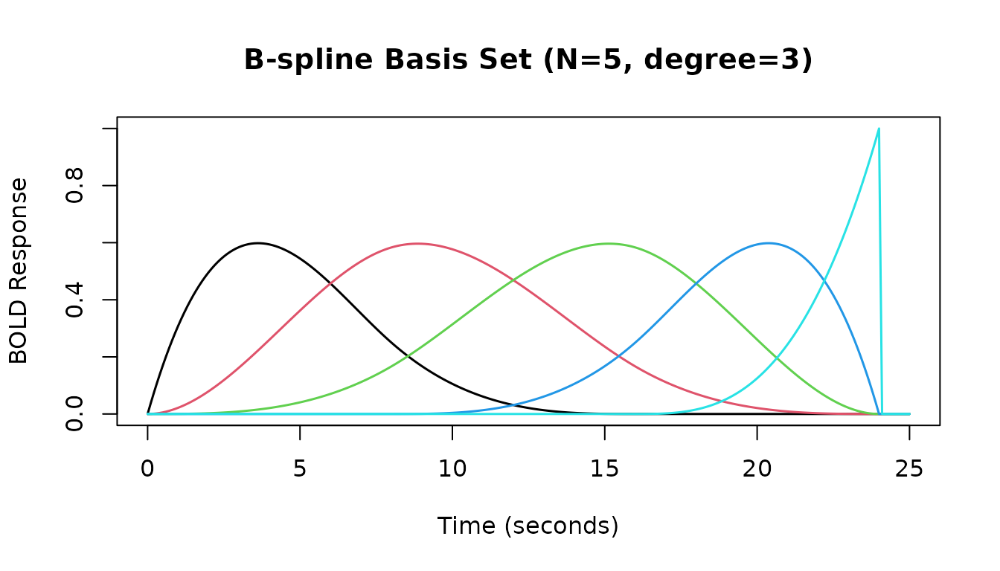

Other HRF Shapes
Mexican Hat Wavelet HRF
The hrf_mexhat function uses the Mexican hat wavelet
(second derivative of a Gaussian).
Boxcar and Weighted HRFs (No Hemodynamic Delay)
Traditional HRFs model the hemodynamic delay—the sluggish blood flow response that peaks several seconds after neural activity. However, sometimes you want to extract signal from specific time windows without assuming any hemodynamic transformation. This is useful for: - Extracting raw signal averages from specific post-stimulus windows - Trial-wise analyses where you want the mean (or weighted mean) of the BOLD signal - Comparing signal in different temporal windows directly - Creating custom temporal weighting schemes
Simple Boxcar HRF (hrf_boxcar)
The hrf_boxcar function creates a simple step function
that is constant within a time window and zero outside. Unlike
traditional HRFs, there is no built-in hemodynamic delay—the HRF starts
at time 0 (event onset) and extends for the specified
width.
# Create a boxcar of width 5 seconds (from 0 to 5 seconds)
hrf_box <- hrf_boxcar(width = 5)
print(hrf_box)
#> -- HRF: boxcar[5] -----------------------------------------
#> Basis functions: 1
#> Span: 5 sTo create a boxcar that starts at a later time point—useful for
capturing signal in a specific post-stimulus window—use
lag_hrf():
# Boxcar from 4-8 seconds post-stimulus (capturing the expected BOLD peak)
# Use lag_hrf() to delay a 4-second boxcar by 4 seconds
hrf_delayed <- hrf_boxcar(width = 4) %>% lag_hrf(lag = 4)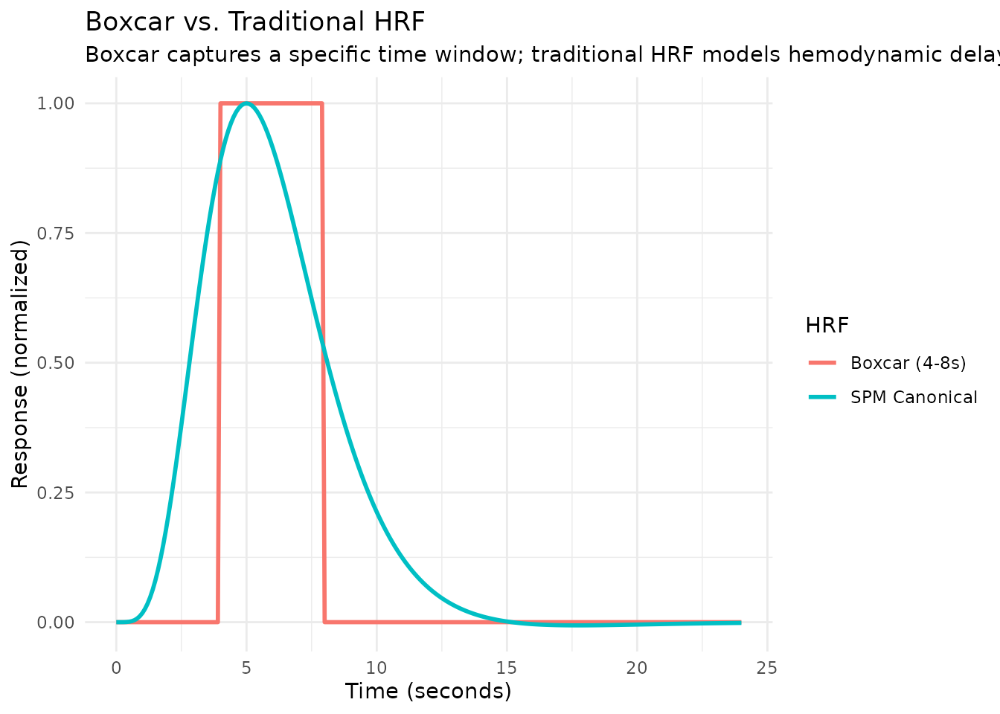
Normalized Boxcar: Estimating Mean Signal
When normalize = TRUE, the boxcar is scaled so its
integral equals 1. This has an important interpretation: when
used in a GLM, the regression coefficient β directly estimates the mean
signal within the time window.
# Normalized boxcar - integral = 1
# A 4-second boxcar lagged by 4 seconds (captures 4-8s window)
hrf_norm <- hrf_boxcar(width = 4, normalize = TRUE) %>% lag_hrf(lag = 4)
# Check: amplitude should be 1/4 = 0.25
t_fine <- seq(0, 12, by = 0.01)
resp_norm <- evaluate(hrf_norm, t_fine)
cat("Amplitude of normalized boxcar:", max(resp_norm), "\n")
#> Amplitude of normalized boxcar: 0.25
cat("Expected (1/width):", 1/4, "\n")
#> Expected (1/width): 0.25
# Verify integral ≈ 1
integral <- sum(resp_norm) * 0.01
cat("Integral of normalized boxcar:", round(integral, 3), "\n")
#> Integral of normalized boxcar: 1Interpretation: If you fit a GLM with this normalized boxcar HRF, the estimated β coefficient represents the average BOLD signal from 4-8 seconds post-stimulus.
Weighted HRF (hrf_weighted)
The hrf_weighted function provides more flexibility by
allowing you to specify different weights at different time points. You
can either: - Use width + weights: evenly
space the weights across the specified width - Use times +
weights: explicitly specify the time points for each
weight
This creates either a step function
(method = "constant") or a smoothly interpolated function
(method = "linear").
Using width for Evenly Spaced Weights
# 6 weights evenly spaced over 10 seconds (at 0, 2, 4, 6, 8, 10)
hrf_wt_width <- hrf_weighted(
weights = c(0.1, 0.3, 1.0, 1.0, 0.3, 0.1),
width = 10,
method = "constant"
)Using Explicit times for Custom Spacing
# Weighted step function with explicit time points
hrf_wt <- hrf_weighted(
weights = c(0.1, 0.3, 1.0, 1.0, 0.3, 0.1),
times = c(2, 4, 6, 8, 10, 12),
method = "constant"
)Smooth Weights (Linear Interpolation)
# Smooth weights using linear interpolation
hrf_smooth <- hrf_weighted(
weights = c(0, 0.3, 1.0, 1.0, 0.3, 0),
times = c(2, 4, 6, 8, 10, 12),
method = "linear"
)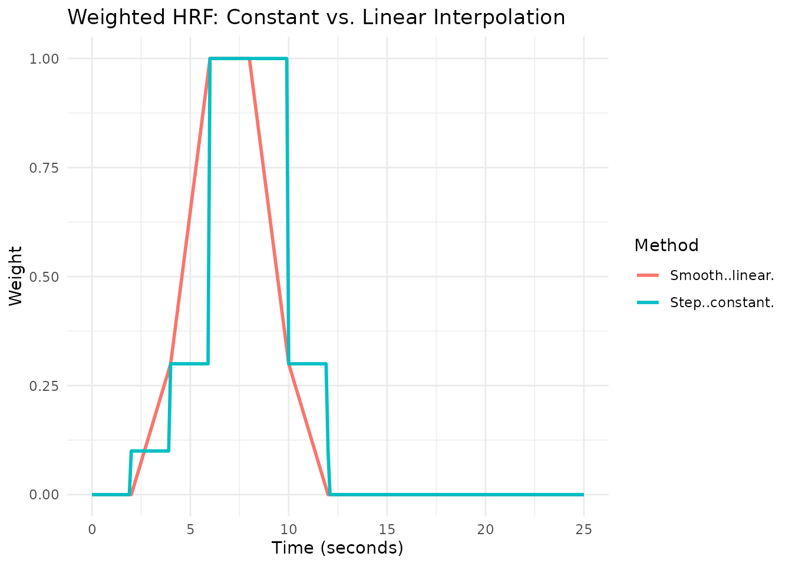
Sub-second Precision
The hrf_weighted function supports sub-second time
intervals, which is useful for fine-grained temporal weighting:
# Sub-second intervals: create a Gaussian-shaped weight function
times_fine <- seq(4, 10, by = 0.25)
weights_gaussian <- dnorm(times_fine, mean = 7, sd = 1)
hrf_gauss_wt <- hrf_weighted(weights_gaussian, times = times_fine, method = "linear")Normalized Weighted HRF: Estimating Weighted Mean
When normalize = TRUE, the weights are scaled to sum
(constant) or integrate (linear) to 1. The regression coefficient then
estimates a weighted mean of the signal:
# Normalized weights - creates weighted average interpretation
hrf_wt_norm <- hrf_weighted(
weights = c(1, 2, 2, 1), # Will be normalized
times = c(4, 6, 8, 10),
method = "constant",
normalize = TRUE
)
# The coefficient β will estimate: (1*Y[4-6] + 2*Y[6-8] + 2*Y[8-10] + 1*Y[10+]) / 6
# where Y[a-b] is the signal in that interval
t_check <- seq(0, 12, by = 0.01)
resp_wt_norm <- evaluate(hrf_wt_norm, t_check)
# Verify: integral should be approximately 1
integral_wt <- sum(resp_wt_norm) * 0.01
cat("Integral of normalized weighted HRF:", round(integral_wt, 3), "\n")
#> Integral of normalized weighted HRF: 2.002Practical Example: Comparing Early vs. Late Response Windows
A common analysis compares BOLD signal in early vs. late portions of a trial. Here’s how to set up HRFs for this:
# Early window: 2-6 seconds (4-second boxcar lagged by 2 seconds)
hrf_early <- hrf_boxcar(width = 4, normalize = TRUE) %>% lag_hrf(lag = 2)
# Late window: 8-12 seconds (4-second boxcar lagged by 8 seconds)
hrf_late <- hrf_boxcar(width = 4, normalize = TRUE) %>% lag_hrf(lag = 8)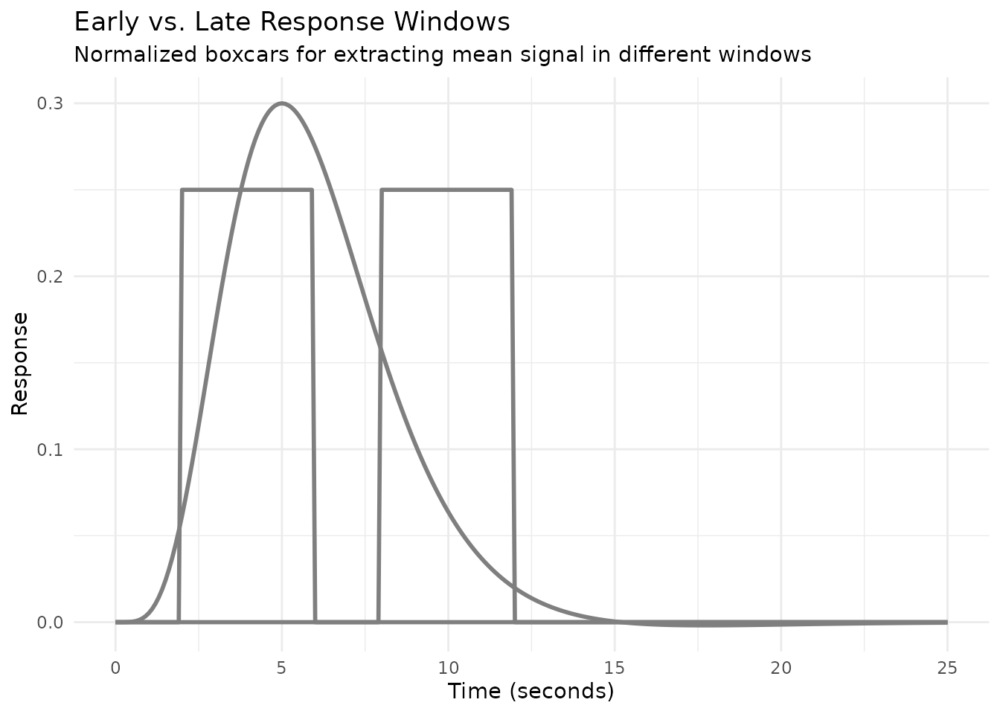
Using these HRFs in separate regressors allows you to estimate and compare the mean BOLD signal in each window.
Using Boxcar/Weighted HRFs with Regressors
These HRFs integrate seamlessly with the regressor()
function:
# Create a regressor with boxcar HRF (4-second window starting 4s after onset)
reg_boxcar <- regressor(
onsets = c(0, 20, 40),
hrf = hrf_boxcar(width = 4, normalize = TRUE) %>% lag_hrf(lag = 4)
)
# Compare with traditional SPM HRF
reg_spm <- regressor(onsets = c(0, 20, 40), hrf = HRF_SPMG1)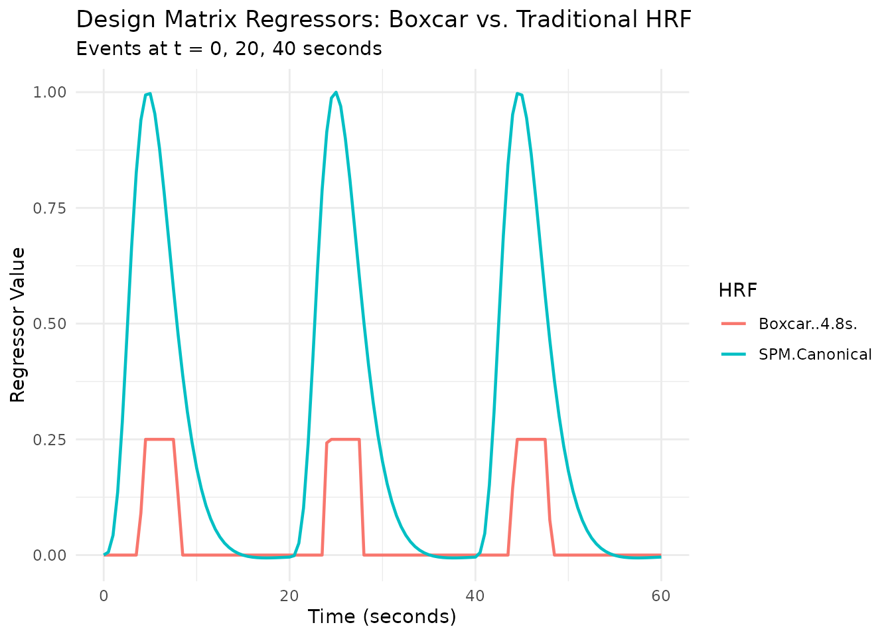
Creating Custom Basis Sets with gen_hrf_set
The gen_hrf_set function allows you to combine
any set of HRF functions into a single multivariate HRF object
(a basis set).
For example, we can create a basis set from a series of lagged Gaussian HRFs:
# Create a list of lagged Gaussian HRFs
lag_times <- seq(0, 10, by = 2)
list_of_hrfs <- lapply(lag_times, function(lag) {
lag_hrf(HRF_GAUSSIAN, lag = lag)
})
# Combine them into a single HRF basis set object
hrf_custom_set <- do.call(gen_hrf_set, list_of_hrfs)
print(hrf_custom_set) # Note: name is default 'hrf_set', nbasis is 6
#> -- HRF: hrf_set -------------------------------------------
#> Basis functions: 6
#> Span: 34 s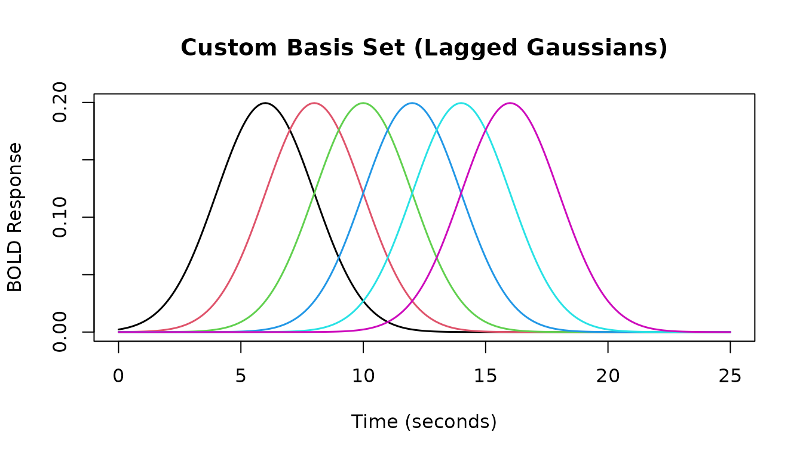
Creating Empirical HRFs
From a Single Measured Response
(gen_empirical_hrf)
If you have a measured or estimated hemodynamic response profile
(e.g., from deconvolution), you can turn it into an HRF function using
gen_empirical_hrf. It uses linear interpolation between the
provided points.
# Simulate an average measured response profile
sim_times <- 0:24
set.seed(42) # For reproducibility
sim_profile <- rowMeans(replicate(20, {
h <- HRF_SPMG1 %>% lag_hrf(lag = runif(n = 1, min = -1, max = 1)) %>%
block_hrf(width = runif(n = 1, min = 0, max = 2))
h(sim_times)
}))
# Normalize profile to max = 1 for better visualization
sim_profile_norm <- sim_profile / max(sim_profile)
# Create the empirical HRF function from the normalized profile
emp_hrf <- gen_empirical_hrf(sim_times, sim_profile_norm)
print(emp_hrf)
#> -- HRF: empirical_hrf -------------------------------------
#> Basis functions: 1
#> Span: 24 s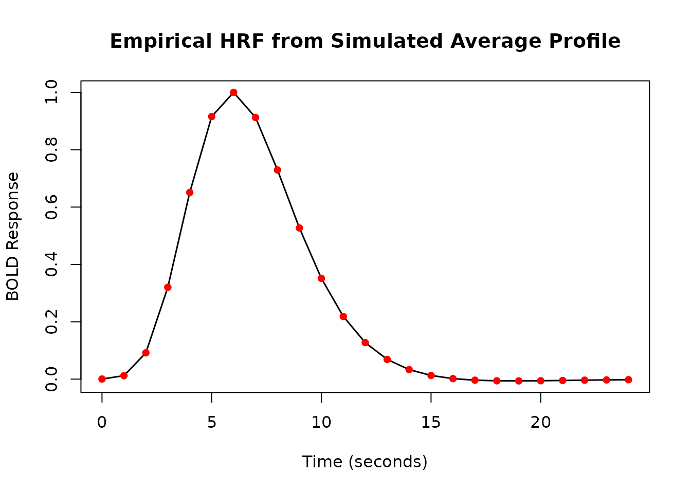
Empirical Basis Set via PCA
You can create an empirical basis set by applying dimensionality reduction (like PCA) to a collection of observed or simulated HRFs.
# 1. Simulate a matrix of diverse HRFs
set.seed(123) # for reproducibility
n_sim <- 50
sim_mat <- replicate(n_sim, {
hrf_func <- HRF_SPMG1 %>%
lag_hrf(lag = runif(1, -2, 2)) %>%
block_hrf(width = runif(1, 0, 3))
hrf_func(sim_times)
})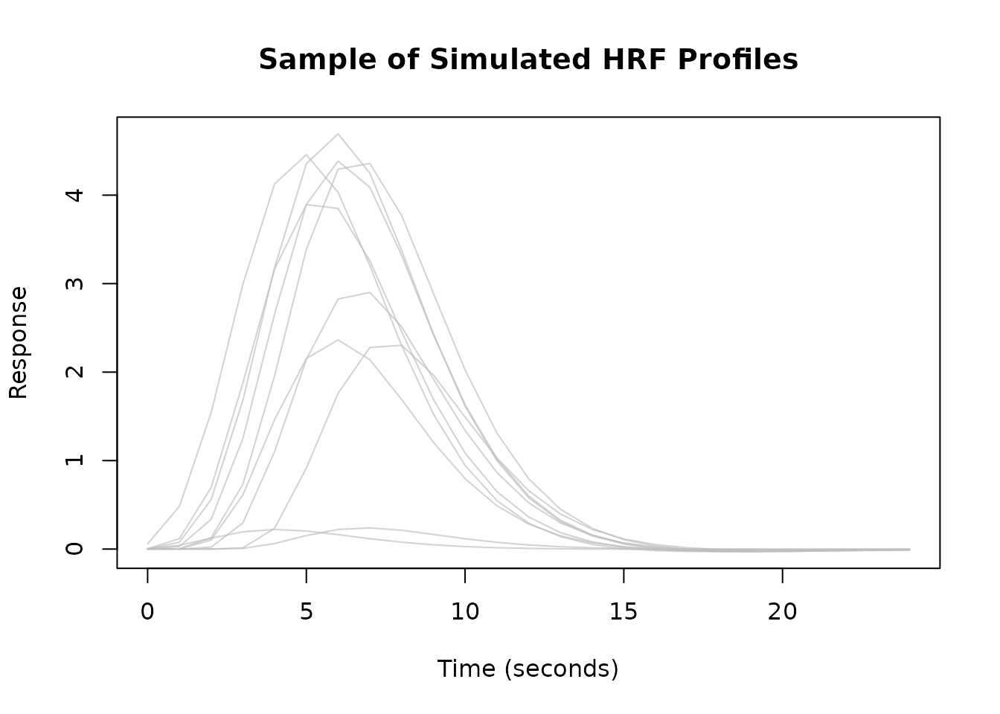
# 2. Perform PCA on the transpose (each column = one HRF, each row = one time point)
pca_res <- prcomp(t(sim_mat), center = TRUE, scale. = FALSE)
n_components <- 3
# Print variance explained by top components
variance_explained <- summary(pca_res)$importance[2, 1:n_components]
cat("Variance explained by top", n_components, "components:",
paste0(round(variance_explained * 100, 1), "%"), "\n")
#> Variance explained by top 3 components: 67.1% 29.9% 2.7%
# Extract the top principal components
pc_vectors <- pca_res$rotation[, 1:n_components]
# 3. Convert principal components into HRF functions
list_pc_hrfs <- list()
for (i in 1:n_components) {
pc_vec <- pc_vectors[, i]
pc_vec_zeroed <- pc_vec - pc_vec[1]
max_abs <- max(abs(pc_vec_zeroed))
pc_vec_norm <- pc_vec_zeroed / max_abs
list_pc_hrfs[[i]] <- gen_empirical_hrf(sim_times, pc_vec_norm)
}
# 4. Combine PC HRFs into a basis set using gen_hrf_set
emp_pca_basis <- do.call(gen_hrf_set, list_pc_hrfs)
print(emp_pca_basis)
#> -- HRF: hrf_set -------------------------------------------
#> Basis functions: 3
#> Span: 24 s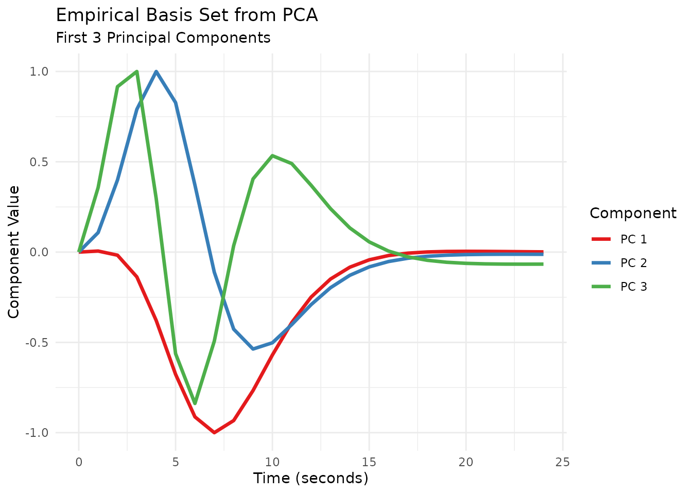
This empirical basis set can then be used in regression models just like any other pre-defined or custom basis set.